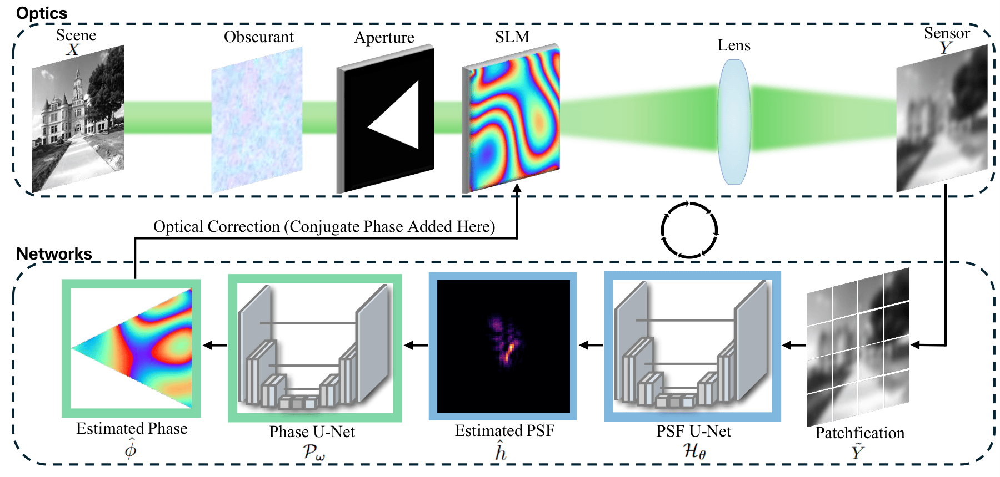
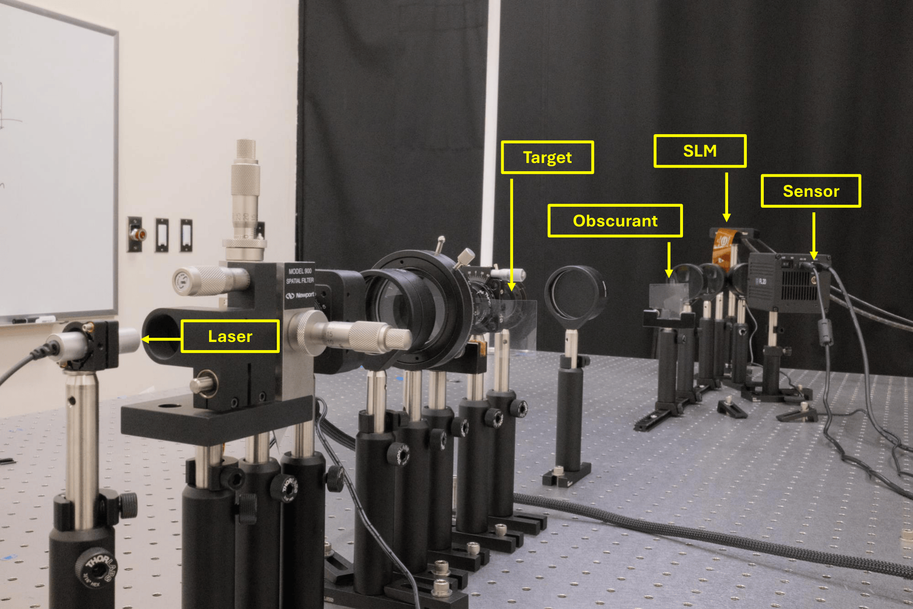

Guidestar-Free Adaptive Optics
with Asymmetric Apertures
- Weiyun Jiang*Rice University
- Haiyun Guo*Rice University
- Christopher A. Metzler†University of Maryland College Park
- Ashok Veeraraghavan†Rice University
*Both authors contributed equally to this work.
†Both authors contributed equally to this work.

Guidestar-free adaptive optics with asymmetric apertures. Our system combines asymmetric apertures with machine learning to image through severe optical aberrations without wavefront sensors or guidestars. By contrast, conventional symmetric apertures suffer from a conjugate-flip ambiguity, which makes computational wavefront sensing—and by extension AO—ineffective. The above results were experimentally captured with a tabletop prototype.
Abstract
This work introduces the first closed-loop adaptive optics (AO) system capable of optically correcting aberrations in real-time without a guidestar or a wavefront sensor. Nearly 40 years ago, Cederquist et al. demonstrated that asymmetric apertures enable phase retrieval (PR) algorithms to perform fully computational wavefront sensing, albeit at a high computational cost. More recently, Chimitt et al. extended this approach with machine learning and demonstrated real-time wavefront sensing using only a single (guidestar-based) point-spread-function (PSF) measurement. Inspired by these works, we introduce a guidestar-free AO framework built around asymmetric apertures and machine learning. Our approach combines three key elements: (1) an asymmetric aperture placed in the optical path that enables PR-based wavefront sensing, (2) a pair of machine learning algorithms that estimate the PSF from natural scene measurements and reconstruct phase aberrations, and (3) a spatial light modulator that performs optical correction. We experimentally validate this framework on dense natural scenes imaged through unknown obscurants. Our method outperforms state-of-the-art guidestar-free wavefront shaping methods, using an order of magnitude fewer measurements and three orders of magnitude less computation.
Breaking Symmetry with Asymmetric Triangular Apertures Enables Unique Phase Retrieval from PSFs

For a circular aperture, the original phase φ(x,y) and its conjugate-flipped counterpart φ(-x, -y) produce identical PSFs after the Fourier transform, leading to phase ambiguity in intensity-only measurements. In contrast, for a triangular aperture—representative of a broader class of asymmetric apertures such as polygons with an odd number of sides—the wavefront phases φ(x,y) and φ(-x, -y) yield distinct PSFs. This asymmetry enables unique phase retrieval from intensity measurements, resolving the ambiguity present in symmetric apertures.
System Overview
Overview of our proposed closed-loop guidestar-free AO system. Light passes through an unknown obscurant and an asymmetric aperture before reaching an SLM. A PSF U-Net estimates the PSF from the captured image, and a Phase U-Net predicts the phase error to drive optical correction.
Experimental Results (Real-World Obscurants)

Experimental results through real-world obscurants including nail polish, onion skin, and a 1° diffuser. While symmetric apertures fail to recover fine details, the triangular aperture leads to substantial improvement in image sharpness.
Optical Setup
Our hardware implementation utilizes a collimated 520 nm laser with a rotating diffuser for spatial incoherence. A 4f system relays the aberration plane onto a HOLOEYE LETO-3 phase-only SLM for optical correction.
Citation
The website template was borrowed from Michaël Gharbi.